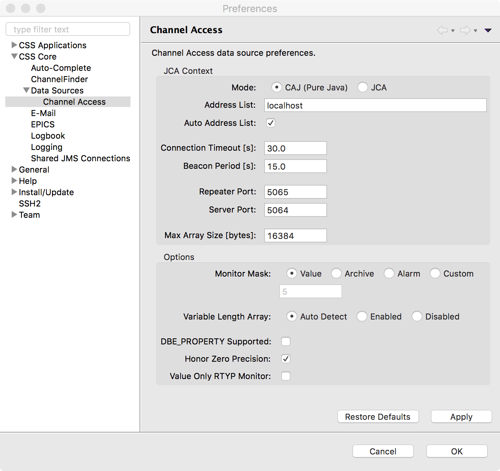
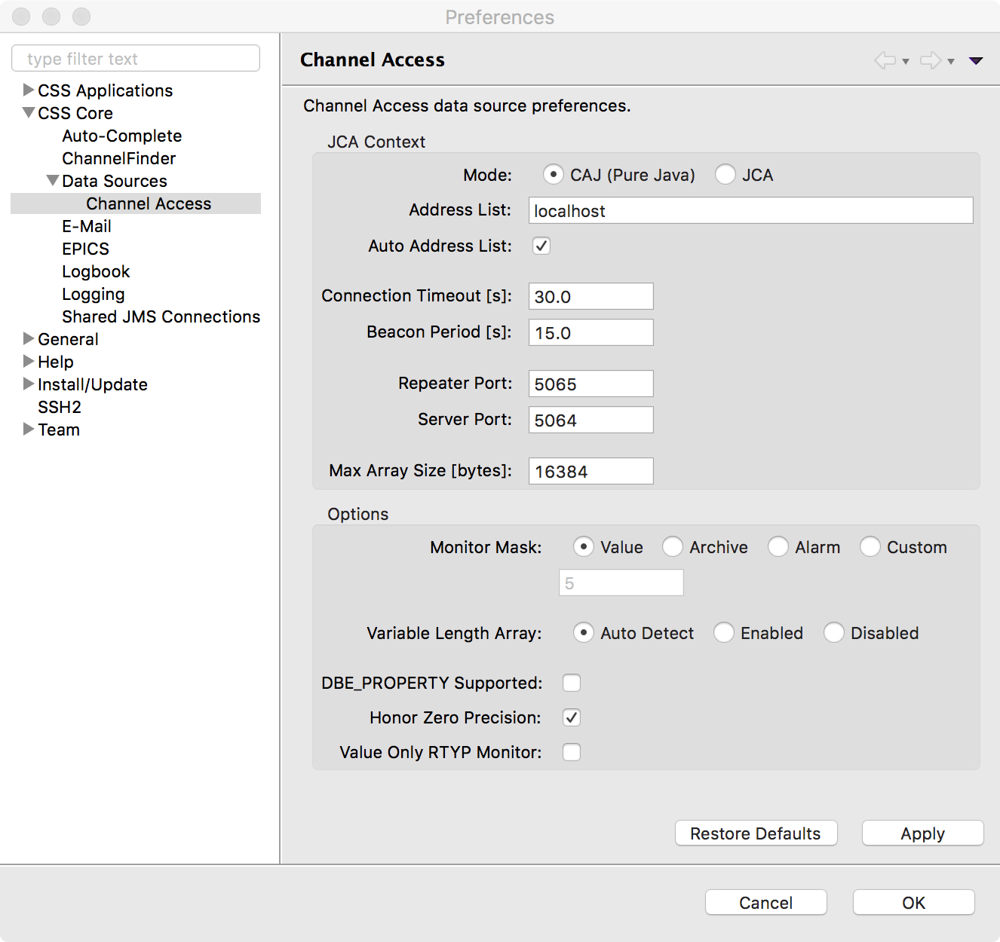
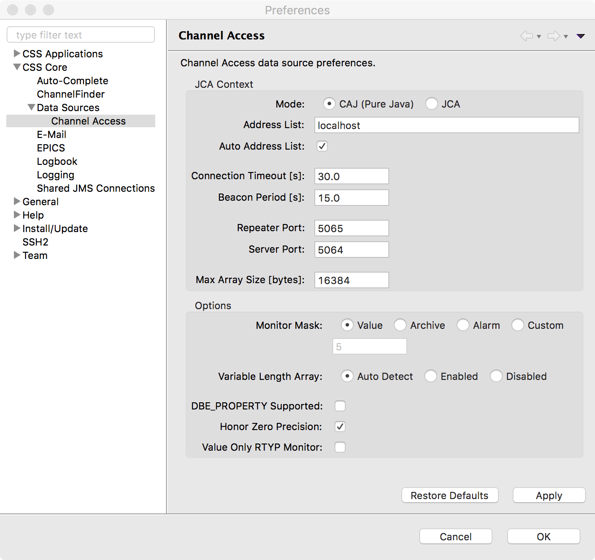

CS-Studio CE up to version 4.1.2 had an EPICS preference page, where all the properties were available to be edited.
Then it was substituted by configuration files, allowing for more flexible extensions.
Most users were unhappy of the last change, because unaware of structure of the configuration directory and the content of the XML configuration files. For this reason a new solution was adopted, creating new preference pages to allow direct manipulation of the settings, backed upon the XML configuration files.

The configuration directory must point to a folder containing a specific structure of sub-folders:
datasources root directory;datasources.xml file inside that directory;datasources one,
containing an XML file (e.g. for Channel Access:
ca/ca.xml.
The datasources/datasources.xml file contains the
default data source to be used when no explicit one is indicated
into a PV address, and the default separator to be used.
The datasources/ca/ca.xml file specifies the parameters
for the Channel Access data source.
The new data source management merges at startup the XML configuration files with the user's preferences in CS-Studio, creating a temporary configuration set used to initialize the DIIRT communication library.
Preference panels in CS-Studio will show the content of the temporary configuration set, and save it as CS-Studio preferences.
To access the preferences from code the following must be done:
org.csstudio.diirt.util.core.preferences to
your project's dependencies.
org.csstudio.diirt.util.core.preferences.DIIRTPreferences.get()
to obtain the reference to the preferences manager.
org.csstudio.diirt.util.core.preferences.DIIRTPreferences,
org.csstudio.diirt.util.core.preferences.pojo.DataSources, and
org.csstudio.diirt.util.core.preferences.pojo.ChannelAccess
classes.
org.csstudio.diirt.util.DiirtStartup.preWindowOpen().
Adding a new sub-page inside the Data Sources preference page is straightforward copying the/being inspired by the classes inside the projects/packages cited in the following list.
org.csstudio.diirt.util.core.preferences.pojo
(project org.csstudio.diirt.util.core.preferences)
package add the JAXB-annotated class(es) corresponding to your
sub-page.
org.csstudio.diirt.util.core.preferences.test project.
org.csstudio.diirt.util.preferences.pojo
(project org.csstudio.diirt.util.preferences)
package add the class(es) implementing your sub-page.
org.csstudio.diirt.util.preferences.DIIRTPreferencesPlugin
correspondingly.
org.csstudio.diirt.util.preferences
project add/update the help pages.